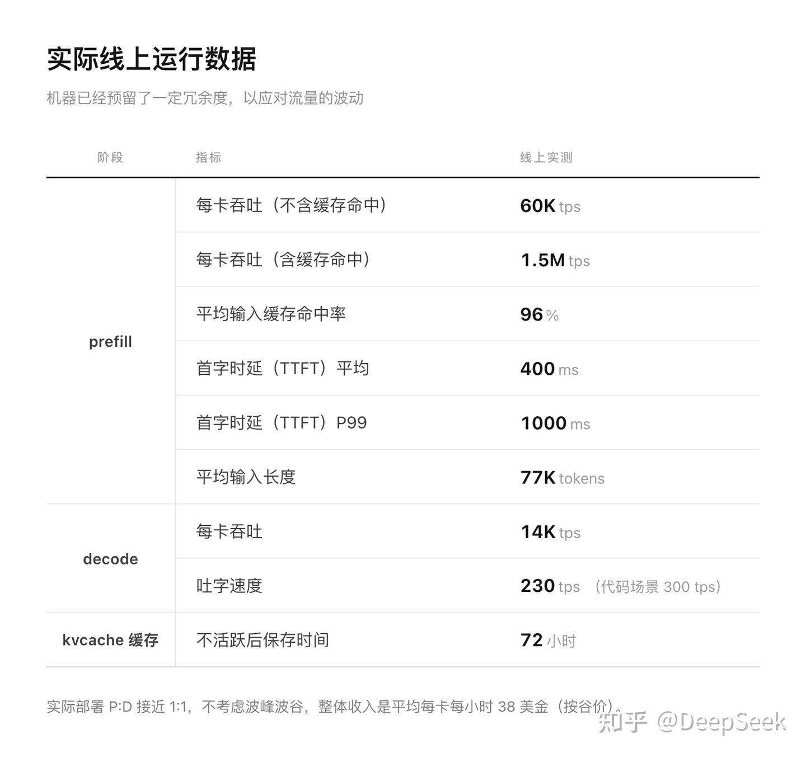
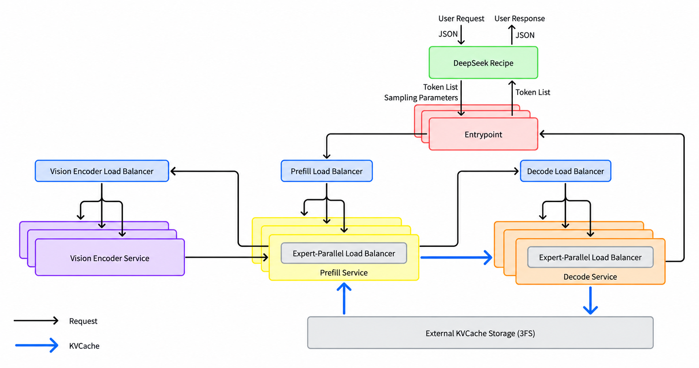

读懂这两篇博客的九个概念
两篇 vLLM 博客里反复出现九个名词。它们分属三类:谁在出题打分、谁在参赛、靠什么硬件和手法拿分。本报告逐个说明它是什么、关键数字、以及它在博客里扮演的角色。
关系总览
一句话串起来:SemiAnalysis 出了一张叫 AgentX 的考卷,用 P90 交互速度划及格线;考生是 DeepSeek-V4.1-Flash 这个模型,由两套引擎来跑——DeepSeek 自家的 DeepInfer,和 Inferact 主导的通用引擎 vLLM;考场是一个 GB300 NVL72 机柜;vLLM 拿高分的两个主要手法是 P/D 分离和 Wide-EP。
SemiAnalysis
一家专做半导体与 AI 基础设施研究的独立分析机构,也是 InferenceX / AgentX 基准的维护方。
- 是谁:由 Dylan Patel 创办,总部在旧金山。一份第三方资料称其成立于 2020 年、约 90 人,这两个数字我只见到单一来源。
- 做什么:付费研究与通讯(newsletter),覆盖芯片、数据中心、AI 算力供需;另外维护一套数据中心行业模型。
- 和推理基准的关系:2025 年 10 月 9 日发布开源推理基准 InferenceMAX,持续(每晚)在真实硬件上跑各家 GPU 与推理软件栈;该项目在第二个大版本时改名为 InferenceX(一个来源给出的日期是 2026 年 2 月 16 日)。公开看板在
inferencex.semianalysis.com。 - 影响力:NVIDIA、AMD 都会引用它的结果做宣传。因为出题方自己也发表分析观点,它的方法论也受到过质疑。
来源:InferenceX 仓库 · Tom's Hardware 对 InferenceMAX 的报道 · Latent Space wiki · aiwiki: InferenceX
AgentX
InferenceX 里的"智能体编程"场景:把真实的 Claude Code 会话录下来再原样重放,测一套硬件加软件栈服务这种流量的效率。
- 发布:AgentX 1.0 于 2026 年 8 月 24 日随 InferenceX v3 公布,Apache 2.0 开源,上下文最长 100 万 token。
- 为什么要它:此前的场景是固定长度的单轮请求(如 8k 输入、1k 输出)。智能体流量完全不同:输入极长、输出很短、同一会话的前缀被反复复用。所以前缀缓存、KV 缓存管理、预填充速度变成决定性因素。
- 怎么重放:内容被脱敏,只保留"形状"——每 64 token 一块的哈希,保住前缀复用模式。用 AIPerf 客户端闭环重放:主智能体各轮串成一条链,子智能体有分叉和汇合依赖,轮与轮之间按录制的间隔等待(模拟工具执行时间)。只有预热后的一小时窗口计入成绩。
- 测的是什么:服务栈的效率(加速器、拓扑、引擎、精度、并行方式、缓存配置、调度),不是智能体有没有把任务做对。
- 怎么比:扫一遍并发客户端数,画出"每 GPU 吞吐 vs. P90 交互速度"的帕累托前沿,在相同交互速度下比吞吐,而不是比峰值。
- 规模:SemiAnalysis 称完整矩阵跑在约 2 MW、1000 多块芯片上,数据集投入超过 300 万美元。
来源:SemiAnalysis 通讯:AgentX / InferenceX v3 · AgentX 指标与方法说明 · NVIDIA 开发者博客
P90
第 90 百分位。把所有样本从好到坏排队,P90 是"90% 的样本都不比它差"的那个值,用来描述慢的那一截,而不是平均水平。
- 为什么不用平均值:平均值会被大量很快的样本拉高,掩盖少数卡顿。服务质量承诺(SLA)关心的是"绝大多数用户的体验至少有多好",所以用 P90、P99 这类尾部指标。
- AgentX 里的"P90 交互速度":交互速度(interactivity)指每个用户每秒收到多少 token,即 1 / 每 token 间隔。AgentX 取 P90 的 token 间延迟再取倒数。延迟的 P90 是偏慢的一端,所以换算出的速度是一个保守值:90% 的 token 间隔都不慢于它。
- 和 P99 的区别:P99 更苛刻,只容许 1% 的样本更差。DeepSeek 报线上首字时延时用的是平均 400 ms、P99 1000 ms。
| 博客里的说法 | 换算成 token 间隔 | 含义 |
|---|---|---|
| P90 196 tokens/s per user | 约 5.1 ms | 整机柜高吞吐点:90% 的 token 间隔不超过约 5.1 ms |
| P90 826 tokens/s(单用户) | 约 1.2 ms | 四块 B300 的专用低延迟路径 |
| 150 TPS 约束(第一篇) | 约 6.7 ms | 在"每用户至少 150 tokens/s"这条线上比吞吐 |
口径提醒:SemiAnalysis 的通讯把交互速度写作 1/TPOT;方法说明页写的是"由 P90 token 间延迟推出的每客户端生成速度"。两处表述一致,但精确公式(是否剔除首 token、如何跨请求聚合)我没有逐字核对官方方法页。
来源:AgentX 指标与方法说明 · SemiAnalysis 通讯 · 本目录《实际线上运行数据_官方统计表》
DeepSeek-V4.1-Flash
DeepSeek 于 2026 年 9 月 10 日发布的开源多模态 MoE 模型,设计目标是把长上下文智能体服务的成本压到极低,核心卖点是 KV 缓存压缩。
让它便宜的几项设计
- CED(因果编码器-解码器):40 层里前半是编码器、后半是解码器。预填充只需跑编码器(激活 8B),解码才跑全模型(16B)。读入比写出便宜一半,正好对上智能体"读得多写得少"的流量。
- CSA2 + FP4 KV + 层间共享:压缩稀疏注意力第二代,KV 以 4 位浮点存储,多层共用一份。官方称相比上一代 V4-Flash,HBM 占用降到 1/4、SSD 占用降到 1/8。技术报告标题就叫《Pushing the Limits of KV Cache Compression》。
- 两种 KV:全局 KV(压缩、共享、约 890 字节/token)和滑动窗口 SWA KV(未压缩,每层只留最后 128 个位置)。博客里的"SWA 有界重放"就是针对后者。
- MoE 规模:目标模型 384 个路由专家、每 token 选 6 个;配套的 DSpark 草稿模型 128 个专家、选 3 个,用于推测解码(一次提议 5 个 token)。
- Engram:按 token n-gram 哈希查两张大表的层,表可以放在主机内存里。
商业侧
- API 模型名
deepseek-flash;分高峰/非高峰定价,非高峰是高峰的五折。 - 10 月有一个小版本更新 V4.1-Flash-1017,DeepInfer 的默认检查点就是它。
- DeepSeek 自报线上数据:平均输入 77K token、输入缓存命中率 96%、TTFT 平均 400 ms、每卡每小时收入 38 美元(按非高峰价)。

来源:DeepSeek 官方发布公告 · 技术报告 arXiv:2609.19969 · Hugging Face 模型页 · 本目录 inference_deployment_qa.md · 两篇博客正文(层数、专家数)
DeepInfer
DeepSeek 自己的大规模推理框架,线上服务 V4.1-Flash 用的就是它;2026 年 10 月下旬以 Apache 2.0 开源。
- 血统:README 明说主要基于 vLLM 构建,并借鉴了 SGLang 和 TensorRT-LLM。所以 vLLM 与它不是两条独立路线,而是上游与下游分叉的关系。
- 开源了什么:离线推理引擎。包含高性能内核(FlashMLA、DeepGEMM、DeepEP、DeepSelect、TileLang 内核)、DP 注意力加 EP MoE 与 EPLB、DSpark 推测解码、解码器 SWA 有界重放、异步调度、结构化输出。
- 没开源什么:KV 缓存系统、预填充/解码分离、DP 副本间的负载均衡。DeepSeek 的解释是这些部分和内部基础设施耦合太紧。
- 硬件:NVIDIA(Blackwell 一代,代号 SM100)和华为昇腾 950。
- 生产规模(DeepSeek 自报):单个集群每天服务 155 万亿 token,每 GPU 小时收入 38 美元。
- 同时开源:deepseek-recipe,负责 API 协议和 token 序列之间的编解码。
- 热度:仓库在调研当日约 2.58 万星。

读数提醒:DeepInfer 的性能数字是 DeepSeek 自己公布的图表,vLLM 是从图上读数来对比的;解码对比中 vLLM 用 DEP32,DeepInfer 用 EP64DP64,并非完全相同的配置。
来源:DeepInfer 仓库 · Quartz 报道 · The Next Web 报道 · vLLM 官方 X 帖 · 本目录 inference_deployment_qa.md
Inferact
vLLM 核心维护者创办的公司,目标是把开源推理引擎 vLLM 商业化;两篇博客的第一署名方。
- 创始团队:Simon Mo、Woosuk Kwon、Kaichao You(游凯超)、Roger Wang;Preqin 的资料还列了伯克利教授 Joseph Gonzalez。各家报道的名单略有出入。
- 其他投资方:红杉、Altimeter、Redpoint、真格基金,以及 Databricks 的风投部门和 UC Berkeley Chancellor's Fund。
- 成立时间:2025 年(一篇报道说是 11 月)。
- vLLM 是什么:2023 年出自 UC Berkeley 的开源 LLM 推理与服务引擎,以 PagedAttention 起家,现在是最主流的开源推理引擎之一,支持各家 GPU 和加速器。
- 商业模式:企业订阅与合作,计划推出付费的托管/无服务器版 vLLM;团队承诺继续向上游开源项目贡献。
来源:TechCrunch · Bloomberg · SiliconANGLE · Preqin
NVIDIA GB300 NVL72 机柜
NVIDIA 的整机柜级 AI 系统:一个液冷机柜里 72 块 Blackwell Ultra GPU 加 36 颗 Grace CPU,全部用 NVLink 连成一个高速互联域。
- 名字怎么读:G = Grace CPU,B300 = Blackwell Ultra GPU,NVL72 = 72 块 GPU 通过 NVLink 互联。上一代是 GB200 NVL72(Blackwell);单卖的 GPU 叫 B200 / B300。
- 物理形态:48U 的 MGX 机柜,18 个 1U 计算托盘(每个 4 GPU + 2 CPU)加 9 个 NVLink 交换托盘,全液冷,功率在 120 kW 量级。电源架数量各家 OEM 资料不一致(6 或 8 个)。
- 关键特性是"scale-up 域":72 块 GPU 之间走 NVLink,而不是普通网络。对软件来说,它更像一台有 72 块 GPU 的大机器,而不是 18 台服务器。
symm_mem 后端在一秒内搬完 32 块 GPU 上的专家权重。DeepSeek 的部署问答也写明,解码就是为 64–128 块 GPU 的"超节点"设计的。同时,规模变大后 CPU 侧的开销反而成了瓶颈,这是第二篇"克服 CPU 开销"一节的来由。来源:NVIDIA 产品页 · Lenovo 数据表 · Supermicro 数据表 · 120 kW 机柜解析
P/D 分离(Prefill / Decode disaggregation)
把一次请求的两个阶段——读入 prompt 的预填充(P)和逐 token 生成的解码(D)——放到不同的实例上跑,中间把 KV 缓存传过去。
为什么要拆
- 两个阶段的负载性质相反:预填充一次处理成千上万个 token,是计算密集型,决定首字时延(TTFT);解码每步每个请求只出几个 token,受内存带宽限制,决定吐字速度。
- 混在一起会互相拖累:一个长 prompt 的预填充会卡住同一批里所有正在解码的请求。在 Wide-EP 下更严重,一个预填充请求会拖住整个 EP 组的前向。
- 拆开后可以各自最优:各用最合适的并行度、内核和 batch 策略,并且 TTFT 与吐字速度可以独立调控、独立扩缩容。
与之相对的是"聚合式"
同一个实例既做预填充又做解码,叫聚合式(aggregated)。第一篇博客的单节点结果就是聚合式的;第二篇的 7.9× 是相对它而言的。
代价
预填充算出的 KV 缓存要搬到解码实例。V4.1-Flash 的 KV 极小,所以这一步很便宜;DeepSeek 甚至说 P 和 D 可以跨相邻机房部署。vLLM 侧用 NIXL(NVIDIA 的传输库)做这件事。
| 预填充(P) | 解码(D) | |
|---|---|---|
| DeepSeek 线上 | EP2–8 / DP2–8,HBM 放得下的前提下越小越好 | EP64–128 / DP64–128,有多少 GPU 用多少 |
| vLLM 博客 | N 个 DEP2 实例(每个 2 块 GPU) | 1 个 DEP16 或 DEP32 的 Wide-EP 实例;整套共用 34–64 块 GPU |
| P 与 D 的 GPU 比例 | DeepSeek 线上约 1:1;vLLM 表格中出现的配置是 8P1D、7P1D(若干预填充实例配一个解码实例) | |
背景补充(来自我已有的知识,未在本次检索中逐条核对):P/D 分离的学术源头通常追溯到 2024 年的 DistServe 和 Splitwise 两篇论文;DeepSeek 在 2025 年 2 月公开的 V3/R1 推理系统概览中已经采用这种架构。DeepSeek 实际用的是 E/P/D 三段,多出的 E 是视觉编码器。
来源:本目录 inference_deployment_qa.md · vLLM 大规模服务博客(2025-12) · llm-d Wide-EP 指南 · DeepSeek V3/R1 推理系统概览
Wide-EP(宽专家并行)
把 MoE 模型的几百个专家摊到几十甚至上百块 GPU 上,每块 GPU 只放少数几个专家;token 走到哪个专家,就被路由到持有它的那块 GPU。
先分清几种并行
| 缩写 | 做法 | 特点 |
|---|---|---|
| TP 张量并行 | 把每个权重矩阵切开分到多块 GPU | 每层都要通信,开销大;共享 KV 会在各 GPU 上重复 |
| DP 数据并行 | 每块 GPU 各自处理一部分请求 | KV 只存自己服务的请求,不重复 |
| EP 专家并行 | MoE 的专家按 GPU 分片 | 每块 GPU 只读自己那几个专家的权重 |
| DEPn | 注意力用 DP,MoE 用 EP,共 n 块 GPU | 两篇博客的标准配置写法,如 DEP2、DEP32 |
"宽"为什么有用
- 解码被权重读取卡住:小 batch 解码时,GPU 大部分时间在从显存读专家权重。每块 GPU 上的专家越少,要读的权重越少;同时全组的 token 汇到少数专家上,每个专家的 batch 变大,矩阵乘法更划算。
- 实测:博客里从 DEP4 到 DEP32,目标模型的 MegaMoE 时间从 13.4 ms 降到 6.0 ms。DeepSeek 自己的图(下)显示 EP64 在同样的每用户速度下吞吐明显高于 EP8。
- 收益会递减:MoE 以外的工作(约 10 ms)不随 EP 变宽而减少,通信和同步开销还在涨。DeepSeek 也说 EP 超过 32 后 MegaMoE 可能不再变快。

离不开的搭档:EPLB
专家有冷有热。专家摊得越宽,越容易出现某块 GPU 恰好拿到热门专家而成为全组最慢的一环,整组都得等它。EPLB(专家并行负载均衡器)定期统计各专家负载,重新安排专家放在哪块 GPU 上,并给热门专家放冗余副本。博客里 EPLB 每 3000 步重排一次,把目标模型的均衡度从 0.35 提到 0.94。
来源:vLLM 大规模服务博客(2025-12) · Red Hat:用 Wide-EP 扩展 DeepSeek 式 MoE · llm-d Wide-EP 指南 · 本目录 inference_deployment_qa.md
读这两篇博客数字时的三个提醒
- "954K tokens/s per GPU"不是生成速度。图 1 的图注写明,这个吞吐把缓存命中的输入、未命中的输入和输出 token 全算进去。智能体负载里绝大部分是命中缓存的输入,所以数字很大。对照 DeepSeek 线上数据:每卡纯解码输出约 14K tps,而含缓存命中的预填充是 1.5M tps。
- "每 GPU 小时 38.96 美元"是折算收入,不是成本。它是把上面的吞吐按 DeepSeek 非高峰 API 价格折算出的金额,正好对上 DeepSeek 自报的线上每卡每小时 38 美元。
- "追平 DeepInfer"有范围。解码是 batch 8–256、131K 上下文这一组配置下 6% 以内,且两边的 EP 规模不同;预填充两边配置差异更大,博客自己声明不能读成加速比。DeepInfer 的数字出自 DeepSeek 公布的图表,尚无独立第三方复测。